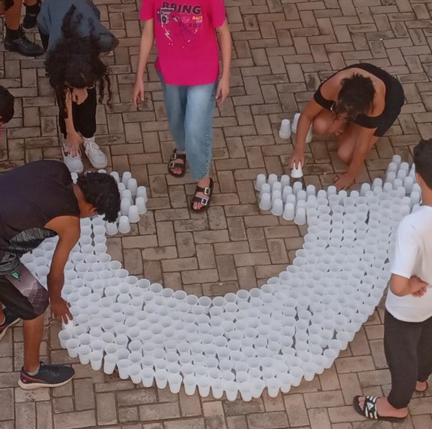

Nesta aula, iniciamos o projeto bimestral de artes.
O professor nos apresentou uma obra de referência para guiar
Primeiro, decidimos qual desenho criar e optamos por um arco-íris. Escolhemos essa imagem porque permite o uso de várias cores, tornando a obra mais interessante visualmente.
Criamos um modelo inicial para termos uma visão de como ficará o desenho final.
Para iniciar o desenho, utilizamos copos vazios, posicionando-os do centro até as extremidades para formar um arco o mais preciso possível. Em seguida, desenhamos as nuvens que serviriam como base para o arco-íris.
